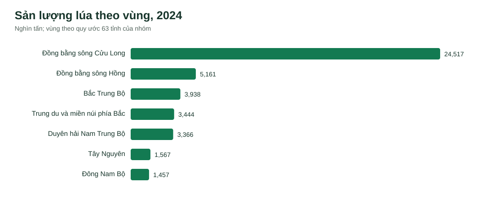
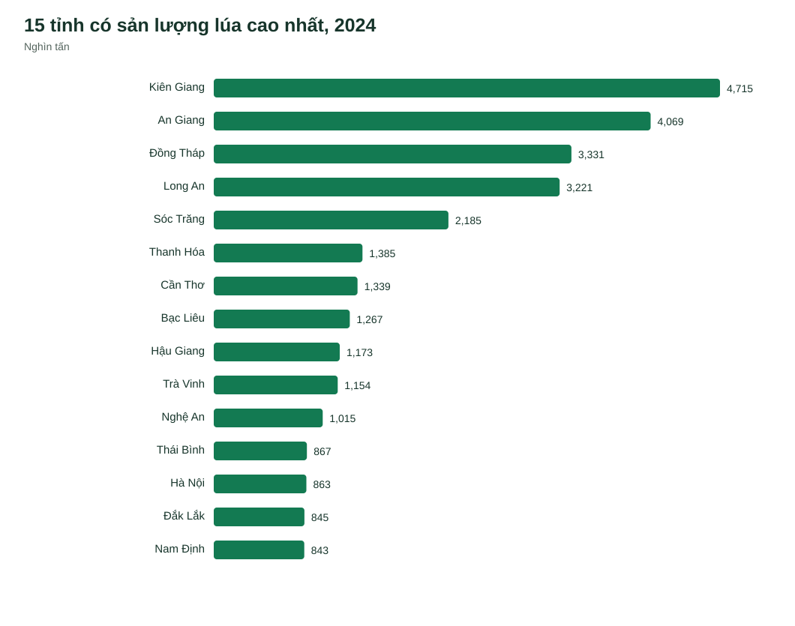
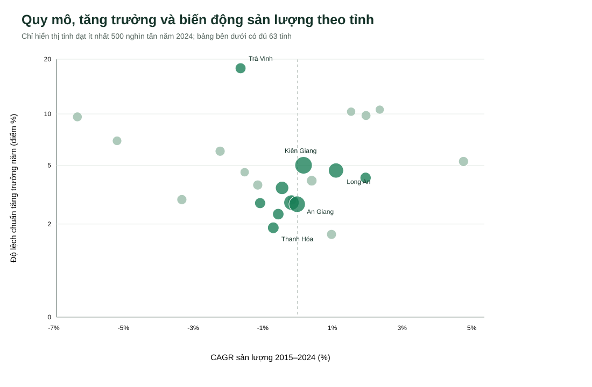

BP1 · Đánh giá vùng thu mua lúa
Số liệu cấp tỉnh 2010–2024 · chỉ số so sánh 2015–2024 · 7 vùng theo quy ước nhóm
Sản lượng theo vùng

Dùng quy mô để chọn vùng cần khảo sát sâu hơn; sản lượng không đồng nghĩa lượng hàng có thể mua.
15 tỉnh sản lượng lớn nhất

Tăng trưởng và biến động cấp tỉnh

Trục ngang: CAGR sản lượng 2015–2024. Trục dọc: độ lệch chuẩn tăng trưởng từng năm 2016–2024; càng cao càng biến động. Biểu đồ chỉ hiện tỉnh đạt ≥500 nghìn tấn trong năm 2024 và dùng thang logarit cho trục dọc. Bảng bên dưới có đủ 63 tỉnh.
So sánh 7 vùng
| Vùng | Số tỉnh | Sản lượng 2024 (nghìn tấn) | Tỷ trọng cả nước (%) | CAGR 2015–2024 (%) | SD tăng trưởng (điểm %) | Giảm sâu nhất (%) |
|---|
Vùng có biến động thấp vẫn có thể gồm các tỉnh biến động cao vì sản lượng giữa các tỉnh có thể bù trừ.
So sánh 63 tỉnh
| Tỉnh | Vùng | Sản lượng 2024 (nghìn tấn) | Tỷ trọng cả nước (%) | CAGR 2015–2024 (%) | SD tăng trưởng (điểm %) | Giảm sâu nhất (%) |
|---|
Nguồn: Cục Thống kê Việt Nam, PX-Web V06.13–V06.15, bản tải 2010–2024. Địa giới 63 tỉnh lịch sử. Không dùng để quyết định nhà cung cấp khi thiếu giá, chất lượng, logistics và lượng hàng thương mại.